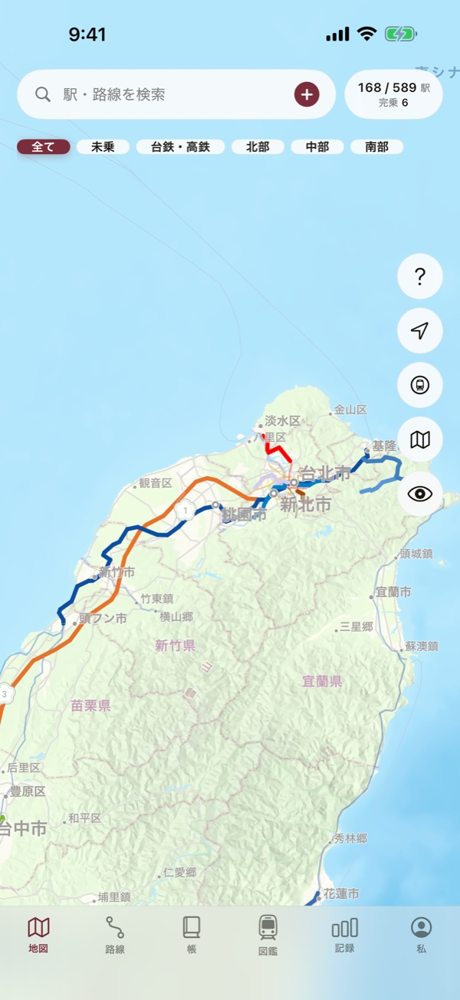
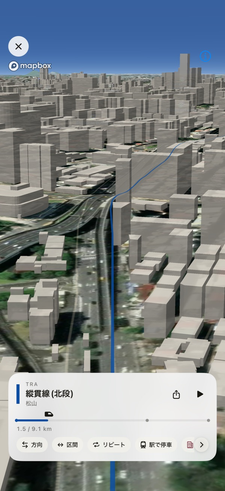
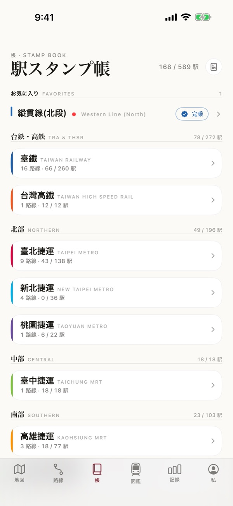

駅をタップするだけで乗車を記録。台湾の路線図が、少しずつあなただけの乗りつぶしマップに育っていきます。台鉄の正式路線、台湾高速鉄道（台湾新幹線）、台北・新北・桃園・台中・高雄のMRTとライトレール、阿里山森林鉄道まで、39路線・589駅を一冊に。
地図の駅をタップするだけ。始点と終点を選べば区間をまとめて登録でき、昔の旅も日付を選んでさかのぼれます。
乗った区間は路線カラーで塗られ、未乗区間はグレーのまま。未乗車の路線だけを表示して、次の旅の計画にも。
訪れた駅はスタンプになってスタンプ帳へ。路線を完乗すると、シェアできる記念カードが登場します。
縦貫線・南廻線から平渓線・集集線・内湾線まで、台鉄の正式路線16本をすべて収録。さらに台湾高速鉄道、5都市のMRTとライトレール、阿里山森林鉄道。台鉄・高鉄・MRTが接続する乗換駅はひとつにまとめて表示します。



衛星写真と3D建物の上を、乗った区間に沿って飛ぶように振り返れます。地下区間は地上の街並みの上を進みます。動画に書き出してシェアも。
起点と終点を選ぶだけで区間内の駅をまとめて記録。乗車日は自由に選べ、GPSで近くの駅もすぐ見つかります。
路線の完乗や駅数の節目で記念カードが登場。そのままSNSでシェアできます。
県市ごとにどれだけ巡ったかを地図の濃淡で表示。A4で書き出せるPDFスタンプ帳も。
高鉄700T、プユマ号、タロコ号から各地のMRT、阿里山の蒸気機関車まで。
iCloud同期で機種変更後もそのまま（無料）。JSONバックアップとExcelで開けるCSVをいつでも書き出せます。
駅をタップして乗車を記録すると、乗った路線が台湾の地図に色づいていきます。台鉄・台湾高速鉄道・MRT・ライトレール・阿里山森林鉄道まで、39路線・589駅を収録した乗りつぶしアプリ。